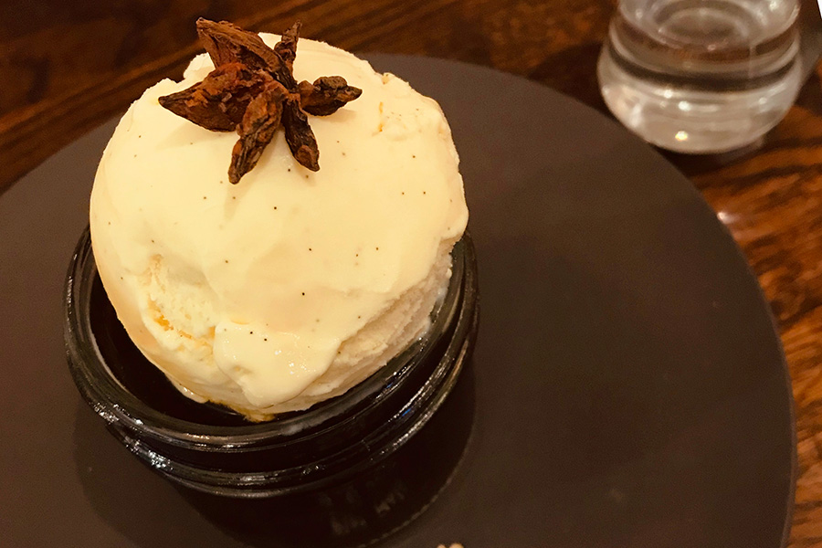

Photo
Story
「———こんなところに喫茶店なんてあったんだ。
いつもは通らない道に、ふらふらと足を踏み入れて突き当たり。
こぢんまりとしたお店がある。
お店の前にはさりげない観葉植物に、メニューの書かれたレトロな黒板の看板。
扉の飾り窓は、ほんの少し色のついたステンドグラス。
雰囲気のいいお店だ。
———ちょうど喉も乾いてきたし、入ってみようかな。
気まぐれに扉を開ける。
扉についていたベルがカランカランと軽やかに鳴った。
「いらっしゃいませ」
コーヒーの匂いと共に店員さんが現れる。
1人です、と伝えると、窓際の丸テーブルに案内された。
席につき、メニューを開く。
コーヒーが多い。
『キリマンジャロ』、『モカ』、『エスプレッソ』や『エスプレッソマキアート』……。
コーヒー豆の産地からコーヒーの種類まで、色々書いてある。
———多いな……。
コーヒーは割となんでも飲めるが種類には疎いので、ちんぷんかんぷんだ。
頭を悩ませながらページをめくっていると、最後の一文が目に入る。
「店主の気まぐれコーヒー」
日替わりで、店主がおすすめのコーヒーを選びます。
———これにしよう。
気まぐれに入った店で気まぐれに選ばれたコーヒーを飲む。
たまにはこういうことがあってもいいだろう。
ベルで店員さんを呼び、注文する。
店員さんがカウンターに戻った後、私は店内をぐるりと見渡した。
入ってきた扉は、やはりステンドグラスが煌めいている。
小さな木製の丸机と椅子が四つと、四人がけのテーブルが三つ。
時間帯が時間帯なだけに、他に人はいない。
微かにかかっている店内音楽はジャズのようだ。
店員さんが戻って行ったカウンターでは、大きなフラスコがアルコールランプにかけられているみたいなセットがある。
視線をスライドさせていくと、店主だろうか、コーヒーをいれる初老の男性と目が合った。
にこりと微笑みかけられたので、軽く会釈をする。
感じの良い人だ。
しばらく隠れ家のような店内を堪能していると、店員さんがやってきた。
とても深いコーヒーの香りがする。
「こちら、本日、店主がおすすめするブレンドコーヒーとなっております」
置かれた白いカップには、黒々としたコーヒーが並々と注がれている。
「砂糖とミルクはそちらをご利用ください」
店員さんは慣れたようにテーブルに備え付けられていた砂糖壺たちを指し示すと、ふっといたずらっぽく笑う。
「そしてこれは、わたくしからのおまけなのですが————」
ことりと小さなお皿が置かれた。
そのお皿には、白いアイスがのっている。
「力作です。ぜひ召し上がってください♪」
少々惚けてしまった私の様子に、楽しそうに笑いながら店員さんは立ち去って行った。
———こういう特別扱い、嫌いじゃない。
————というかすごく、すご〜〜く、嬉しい！
好きだ〜！という気持ちを胸に、私は満面の笑みでこう言った。
「いただきます！」